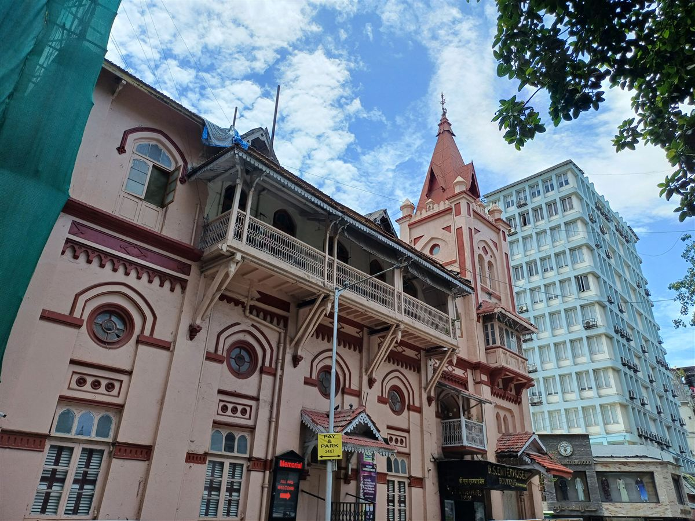

36 Methodist congregations across Mumbai, Pune, Nagpur, and Nanded — united in worship, diverse in language, rooted in heritage.
6 churches · Rev. Lionel Hector, District Superintendent
The historic heart of Mumbai Methodism — Bowen Memorial (1889), Taylor Memorial, and four more congregations in Byculla, Colaba, Madanpura, Parel, Grant Road, and Matunga.
6 churches · Rev. Anand Methry, District Superintendent
Growing communities from Goregaon to Mira Road — serving Tamil, English, and Kannada-speaking congregations across the northern suburbs.
14 churches · Rev. Dr. S. Retnamony, District Superintendent
The largest district by number of congregations — including the historic Oldham Memorial (1877) and four language congregations at Kirkee/Khadki.
5 churches
Marathi, Tamil, English, and Kannada congregations serving the growing Thane-Kalyan-Ambernath corridor.
2 churches
Epworth Tamil and Epworth English — twin congregations in Nerul serving the planned city's diverse community.
3 churches
Two congregations at Mecosabagh, Nagpur (Hindi and Marathi) and one in Vazirabad, Nanded — extending the MRC's reach into Maharashtra's heartland.
Click "View Map" on any church card above to see its location on Google Maps.
Or use "Directions" to navigate directly to the church.